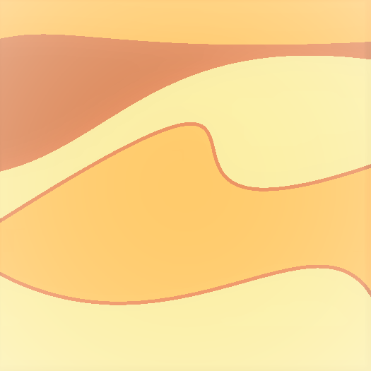

Flowers
A Flower in the Meadow of Wonders represents an art piece accompanied with a short poem, it's not an actual flower. Each Flower represents a state of being.
They all lie within the Meadow, which is
the container of those different wonders
. Each
Flower has a connection to the one that follows it. Together, they tell a story.
Here, I chose to present six Flowers, which are the following:
- Strawberry's Symphony
- The Wandering Whale
- Lavender's Lullaby
- The River of Oranges
- The Shining Sunset
- Dancing Dunes
Click on a Flower in the list above to check it out directly. However, I recommend checking them out first in order.
Strawberry's Symphony

Finding myself in a dream
Filled with great ecstasy
A Strawberry's symphony
Was playing in my mind...
The Wandering Whale
As I wake up
I find myself wondering...
Why do I keep on wandering
Like a whale that is lost
In the vast, vast ocean?
Lavender's Lullaby

Something whispers in my ears
A calming lullaby
Hushing down my fears
With its lavender like effect
The River of Oranges
Here comes the river
Rushing down with great energy
Carrying in it the hope
Of a fresh start
The Shining Sunset
A warm sunset
Shines in my heart
A bright tomorrow
Is on its way
Dancing Dunes

As one looks into themselves
They're first met with a storm of confusion
But as one begins to search more
They, at last, find their own desert
Dancing Dunes reveal who one truly is.
And as one listens to the symphony within,
Their transformation finally begins.